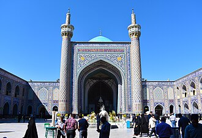

概要
La Mosquée Goharshad est une mosquée célèbre de Machhad, capitale du Khorasan-e-razavi en Iran.
مسجد جوهرشاد من بين المساجد الإسلاميّة التي نالت شرفاً خاصّاً مسجد جامع گوهرشاد، بسبب مجاورته للحضرة الرضوية.
The Goharshad Mosque is a historic grand Friday mosque that is part of the Imam Reza Shrine complex, located in Mashhad, in the province of Razavi Khorasan, Iran. It was commissioned by Empress Goharshad, the queen of Sultan Shah Rukh of the Timurid Empire. Construction began in 1418 CE and was completed around 1430 CE.
Gevherşad Camii, İran'ın Razavi Horasan Eyaleti, Meşhed'de Timurlular döneminde inşa edilmiş büyük bir cemaat camisidir.
Masjid Goharshad adalah masjid jami (jāmeh) yang merupakan bagian dari kompleks Makam Imam Reza dan terletak di Mashhad, Provinsi Razavi Khorasan, Iran. Pembangunan masjid dimulai pada 1418 M, pada masa Dinasti Timurid, dan selesai sekitar ca 1430 M. Pada waktu yang bersamaan, terdapat pembangunan Masjid Gawhar Shad yang terletak di Herat.
گوہر شاد مسجد ایران کے صوبہ خراسان کے شہر مشہد کی ایک معروف مسلم عبادت گاہ ہے۔ یہ مسجد تیموری سلطنت کے دوسرے فرمانروا شاہ رخ تیموری کی اہلیہ گوہر شاد کے حکم پر 1418ء میں تعمیر کی گئی اور اسے اس وقت کے معروف ماہر تعمیر غوام الدین شیرازی نے تعمیر کیا جو تیموری عہد کی کئی عظیم الشان تعمیرات کے معمار بھی ہیں۔ صفوی اور قاچار دور میں اس مسجد میں تزئین و آرائش کا کام بھی کیا گیا۔ مسجد میں 4 ایوان اور 50 ضرب 55 میٹر کا ایک وسیع صحن اور متعدد شبستان بھی ہیں۔ مسجد کا گنبد 1911ء میں روسی افواج کی گولہ باری سے شدید متاثر ہوا۔ یہ مسجد 15 ویں صدی کی ایرانی تعمیرات کا اولین اور اب تک محفوظ شاہکار ہے۔ اس کے داخلی راستے میں سمرقندی انداز کی محراب در محراب ہیں جبکہ بلند مینار بھی اس کی شان و شوکت کو مزید بڑھاتے ہیں۔
Die Goharschad-Moschee ist eine bedeutende persische Moschee aus dem 15. Jahrhundert. Sie liegt in der iranischen Stadt Maschhad neben dem Imam-Reza-Schrein.
La Mezquita de Goharshad es una importante mezquita persa del siglo XV. Se encuentra ubicada en la ciudad iraní de Mashhad junto al Santuario del Imán Reza.
La Moschea Goharshad è un'antica moschea a Mashhad della provincia del Razavi Khorasan, in Iran, che ora funge da una delle sale di preghiera all'interno del santuario dell'Imam Reza.
De Goharshad-moskee is een voormalige vrijstaande moskee in Mashhad, gelegen in de provincie Razavi-Khorasan, (Iran), die nu bestemd is als een van de gebedshallen behorend tot het Imam Reza-schrijncomplex.
Мечеть Гохаршад — мечеть в иранском городе Мешхед, является частью комплекса мавзолея Имама Резы.
Gowharshads moské är en moské i Iran och är belägen söder om Imam Rezas mausoleum i staden Mashhad. Gowharshads moské byggdes på begäran av Gauhar Shad, timuridkungen Shah Rukhs hustru, år 1415.
地図上の位置
資料とリンク
- Wikipédia — Français
- Wikipédia — العربية
- Wikipédia — English
- Wikipédia — Türkçe
- Wikipédia — Bahasa Indonesia
- Wikipédia — اردو
- Wikipédia — Deutsch
- Wikipédia — Español
- Wikipédia — Italiano
- Wikipédia — Nederlands
- Wikipédia — Русский
- Wikipédia — Svenska
- Wikidata — Q2393680
データ：ウィキデータ（CC0）、3か月ごとに更新。年は、その建物について知られている最も古い建設年です。のちにモスクになった建物（アヤソフィアなど）の場合は、元の建物の建設年です。写真：ウィキメディア・コモンズ。作者とライセンスは各写真のページにあります。